SentinelSCADA › Server Setup Guide › Part 2
Copy SentinelSCADASetup.exe to the machine you are installing on. A download, a USB stick, or the shared folder set up in Part 1 all work. Ours was in the Downloads folder. The file’s properties show its version, which will differ from the one in these pictures.
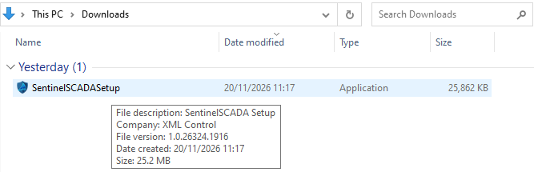
If you are upgrading an existing installation, or have a licence file, read the two notes below first.
SentinelServer.exe. A full uninstall can remove it, along with everything else in that folder. Before you uninstall:
SentinelServer.exe, and start SentinelSCADA again.The installer is a five-step wizard: Welcome, License, Location, Installing and Finish. Double-click it to start. The first page shows the version and the size. Press Next.
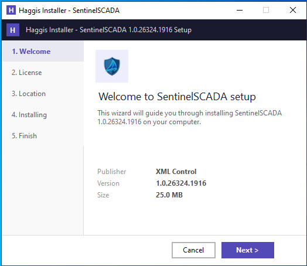
Read the licence agreement, tick I accept the terms of the license agreement, and press Next.
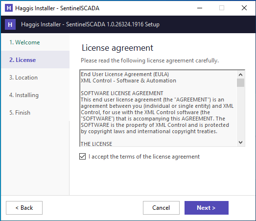
Choose where to install. The default, C:\Program Files\SentinelSCADA, suits almost everyone and is what the rest of this guide uses. You can also choose whether to create a desktop shortcut. Press Install.
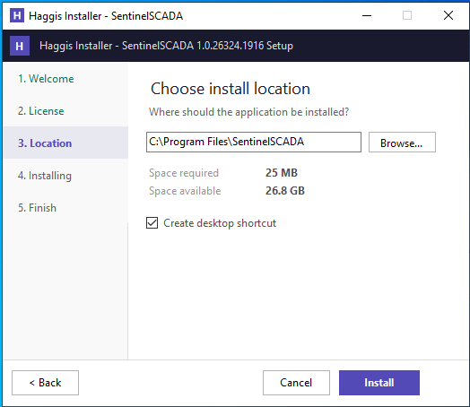
When it finishes, untick Launch application now before pressing Finish. SentinelSCADA also needs some Microsoft runtimes that are not on the machine yet, and the next sections put them there first.
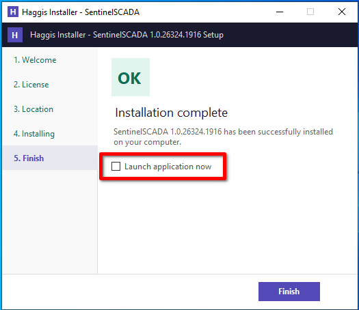
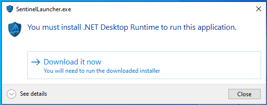
Press Close, not Download it now. That link fetches only one of the three things SentinelSCADA needs. The script in Preparing the machine below installs all of them.
The installer puts three PowerShell scripts in the Tools folder, at C:\Program Files\SentinelSCADA\Tools.
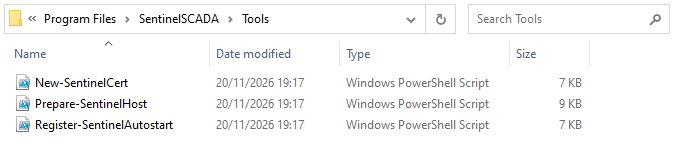
Prepare-SentinelHost installs the Microsoft runtimes SentinelSCADA needs, and can open the firewall ports. We use it in the next section.Register-SentinelAutostart starts SentinelSCADA automatically when an account logs on. We use it in Part 4.New-SentinelCert makes an HTTPS certificate. We use it in Part 5. The Launcher’s Generate New button runs it for you.I ACCEPT before they do anything.Right-click the script, choose Open with, then Notepad. Each script opens with a description of what it does, what it changes and what options it has. Prepare-SentinelHost, for example, lists the runtimes it installs and the three Microsoft web addresses it downloads them from, and says that nothing else is fetched.
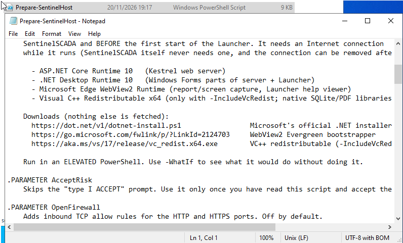
Prepare-SentinelHost in Notepad.If you do not understand something, or do not want it done on your machine, do not run the script.
The scripts that change your system need an elevated PowerShell, one running as Administrator. Open the Start menu, type PowerShell, right-click Windows PowerShell and choose Run as administrator. The title bar then starts with Administrator.
Administrator account, which is already elevated. On other accounts it may not: the script can stop at its first check, and the window closes before you can read why. If in doubt, use the elevated PowerShell above, where any message stays on screen.We start each script with powershell -NoProfile -ExecutionPolicy Bypass -File. The -ExecutionPolicy Bypass part allows that one script to run. Windows 11 blocks scripts by default, and Windows also blocks scripts that arrive from the Internet or from a network share. The setting applies to that single run only and changes nothing permanently.
Now run Prepare-SentinelHost to install what SentinelSCADA needs. In an elevated PowerShell, go to the Tools folder and run it:
cd 'C:\Program Files\SentinelSCADA\Tools'
powershell -NoProfile -ExecutionPolicy Bypass -File .\Prepare-SentinelHost.ps1It needs an Internet connection for a few minutes. If they are not already on the machine, it installs three things:
The ASP.NET Core Hosting Bundle does not include the Desktop runtime, so even if you have installed it, still run this script.
-WhatIf to the end of the command. The script then reports what it would do and changes nothing.Before it changes anything, the script shows a notice and asks you to type I ACCEPT, in capitals. Anything else stops it, with nothing changed. Typing it confirms that you have read the script and accept the risk of running it.
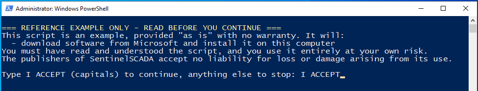
I ACCEPT typed.The script then downloads and installs each runtime in turn. Lines such as “Installation finished” show each one completing. The note that the script “does not ensure your Windows version is supported” is part of Microsoft’s own installer and is normal.
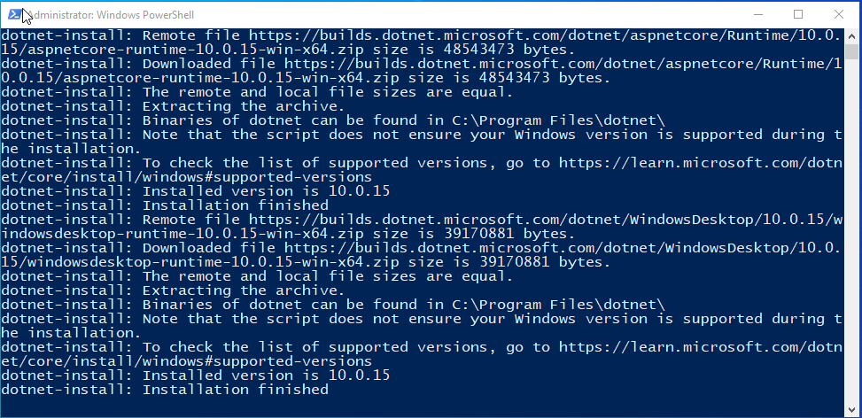
To check that everything is in place, at any time, run the script again with -Check. It installs nothing, changes nothing and asks nothing, and it does not need an elevated PowerShell:
powershell -NoProfile -ExecutionPolicy Bypass -File .\Prepare-SentinelHost.ps1 -CheckIt lists each requirement with its version, or MISSING if it is not there.
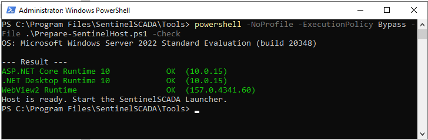
If anything shows as MISSING, run the script again without -Check.
Before you go on, check that you have:
C:\Program Files\SentinelSCADA, with the three scripts in its Tools folder.Prepare-SentinelHost.ps1 -Check.The Internet connection has done its job. SentinelSCADA never needs one, so you can disconnect the machine from the Internet now if you wish.
If you are using a virtual machine, this is a good moment to save its state. From the virtual machine’s Machine menu choose Take Snapshot and call it SentinelSCADA installed. If anything goes wrong later, you can come back to this point without installing again.